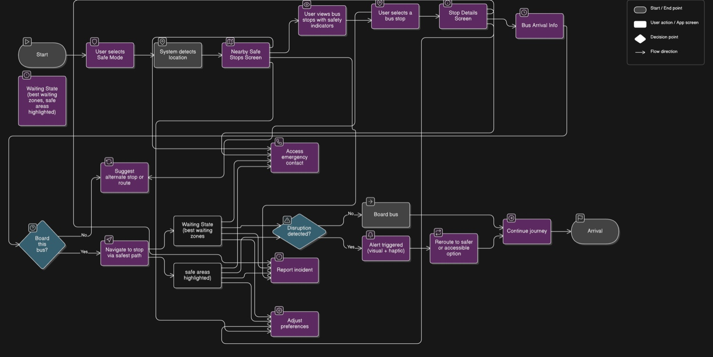

फ़िज़िकल इंटरफ़ेस · टीम प्रोजेक्ट
SafeWay
सुरक्षा और सुगम्यता को ध्यान में रखने वाले सफ़र के रास्ते।
मेरा योगदान
मैंने Figma में वायरफ़्रेम और प्रोटोटाइप बनाने में योगदान दिया। टीम ने देखा कि यात्री रास्ता कैसे चुनेंगे और हालात बदलने पर क्या करेंगे।
समस्या
रात के सफ़र या लिफ़्ट बंद होने पर सबसे तेज़ रास्ता भी सही विकल्प नहीं हो सकता। हमने देखा कि रास्ता चुनने से पहले यात्रियों को कौन-सी जानकारी चाहिए।
डिज़ाइन प्रक्रिया
यात्रा मानचित्रों और यूज़र फ़्लो की मदद से हमने रास्ता चुनने, रुकावट की सूचना पाने और सुगम विकल्प ढूँढने के चरण बनाए। Safe Mode में रोशनी, भीड़ और सुगम्यता को ध्यान में रखा गया।


प्रोटोटाइप
स्क्रीन और कंपन से मिलने वाली सूचनाएँ बताती हैं कि क्या बदला और कौन-सा दूसरा रास्ता लिया जा सकता है। लाइव ट्रांज़िट डेटा और सुरक्षा के मानदंडों की जाँच आगे करनी होगी।